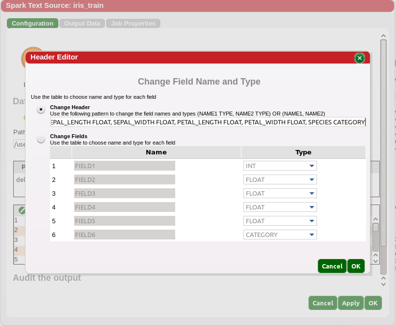
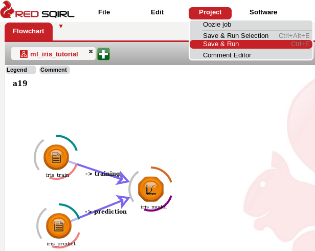
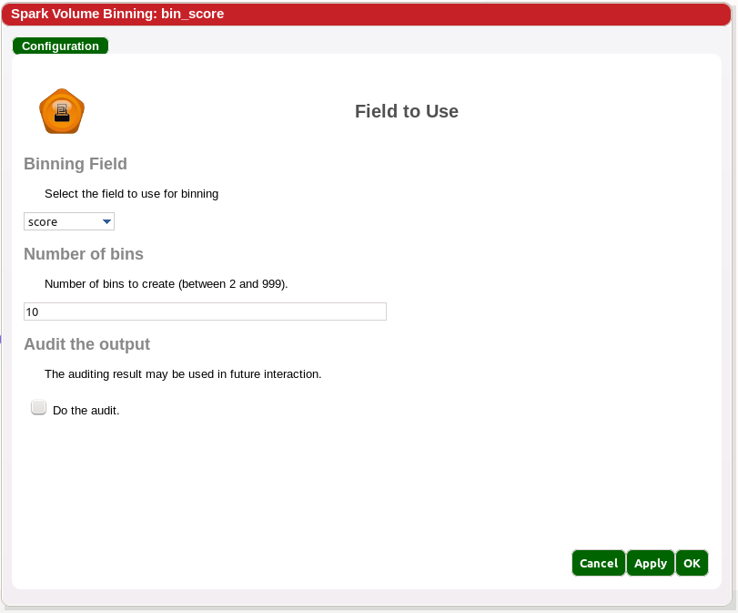
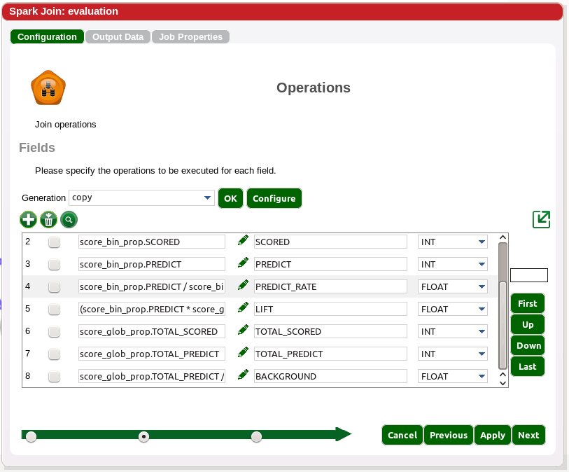

Machine Learning Tutorial
This workflow will demonstrate how to run a Logistic Regression in Red Sqirl and create an evaluation method. The Spark Logistic Regression from the SparkML package will be used.
The user will need two files to complete this tutorial. The files can be found at tutorial data directory (see Pig Tutorial for knowing how to transfer file).
- ml_tutorial_training_data.txt
- ml_tutorial_prediction_data.txt
Transfer these files onto the hadoop file system into two new HDFS directories 'ml_tutorial_training_data.mrtxt' and 'ml_tutorial_prediction_data.mrtxt'.
Goals:
- Build a Logistic Regression
- Build a reusable evaluation method
Build a Logistic Regression Model
This workflow will demonstrate the Spark Logistic regression action. This action allows us to run logistic regression over a data set. Its inputs are the training and the prediction dataset. That means that two source actions are needed.
The following will load training and prediction data sets.
- Create a new canvas by clicking the plus symbol on the canvas tabs bar
- Drag a Spark Text Source, double click on it, name it
“iris_train”
- Select “ml_tutorial_training_data.mrtxt” path.
- Copy and paste the header
“ID STRING, SEPAL_LENGTH FLOAT, SEPAL_WIDTH FLOAT, PETAL_LENGTH FLOAT,
PETAL_WIDTH FLOAT, SPECIES CATEGORY ”

- Drag a Spark Text Source, double click on it, name it
“iris_predict”
- Select “ml_tutorial_prediction_data.mrtxt” path.
- Copy and paste the header
“ID STRING, SEPAL_LENGTH FLOAT, SEPAL_WIDTH FLOAT, PETAL_LENGTH FLOAT,
PETAL_WIDTH FLOAT, SPECIES CATEGORY ”
- Click OK, and OK on the success message.
- Click OK to close the window
Finally we configure the model.
- Drag the Spark logistic regression action to the canvas.
- Select the source “iris_train” and create a link to the
new “spark LR” action.
- A new window should appear and ask you to
select whether it is a training data set or a prediction data
set, select training and then click OK.
- Select the source “iris_predict” and create a link to the
new “spark LR” action.
- In this window select prediction and then click OK.
- Open the “spark LR” action
and name it “iris_model”.
- The first page with list three interactions : ID, Target and Target Value.
- In the Id interaction select “ID”.
- In the Target select “SPECIES”.
- Finally in the Target Value
input “Iris-setosa” as the value without quotes.
- Click next to see the Model settings
such as predictors and parameters for running the
model.
- For the purposes of the tutorial we
will leave these interactions alone and just click ok.
- Save the workflow as “ml_tutorial”.
- Run the workflow.

- View the Result in the Data Output tab of iris_model.
Build an Evaluation Method
In this section we will build an evaluation methodology to calculate the accuracy of our model. First we need to join the score we obtain with the predictive data.
- Drag a Spark Join action to the canvas.
- Create a link between 'iris_predict' and the new join action.
- Create a link between 'iris_model' and the new join action.
- Open the new Join action.
- Open it, name it “score_vs_value” and click ok.
- The next page is the ‘Inputs’ page. There are no changes here, so click next.
- On the next page, the ‘Operations’ page, create two new fields using the formulae below.
| Operation |
Field Name |
Type |
| iris_model.score |
score |
FLOAT |
| IF(iris_predict.SPECIES = 'Iris-setosa',1,0) |
value |
INT |
- Click next.
- Join on ID and label. The table should look like
| Relation |
Join Field |
| iris_predict |
iris_predict.ID |
| iris_model |
iris_model.label |
- Click OK.
Create Bins
We will now separate our score in 10 bins of same size ranked on the score.
We expect to see a high accuracy on high scores.
- Drag a Spark Volume Binning onto the canvas.
- Select the “score_vs_value” and create a link to the
new binning action.
- Open it and name it “bin_score”.

- Choose “score” in the binning field.
- Type 10 for the number of bins.

- Click OK.
Global Model Metrics
We will calculate some global parameters of the model such as how many scores
we have and how many items were to be predicted.
- Drag a Spark aggregator to the canvas.
- Link 'score_vs_value' with the new aggregator action.
- Open it and name it “score_glob_prop”.
- On the Aggregator page, click next.
- On the Attribute page, click Configure and select TOTAL_CNT from COUNT menu, setosa_flag_SUM from the SUM menu and then click Generate.
- Rename the field names to TOTAL_SCORED and TOTAL_PREDICT.
| Operation |
Field Name |
Type |
| SUM(1) |
TOTAL_SCORED |
FLOAT |
| SUM(setosa_flag) |
TOTAL_PREDICT |
FLOAT |
- Click on the bottom right OK button.
Bin Model Metrics
We need to calculate the same values per bin.
- Drag a Spark aggregator to the canvas.
- Link 'bin_score' with the new aggregator action.
- Open it and name it 'score_bin_prop'.
- Select 'BIN_score' on the Aggregator page and click next.
- On the Attributes page, click Configure. Go to Copy and select score_BIN, go to COUNT and select TOTAL_CNT, go to sum and select setosa_flag_SUM, and click Generate. Rename TOTAL_CNT to SCORED and setosa_flag_SUM to PREDICT.
- Click ok.
Evaluation
Create the evaluation end result.
- Drag a Spark Join to the canvas.
- Select the “score_bin_prop” action and create a link to the
new join action.
- Select the “score_glob_prop” action and create a link to the
new join action.
- Open the new join and name it “evaluation”.
- The Inputs are already set up, so click next to continue.
- On the Operations page create the following eight fields, renaming them as necessary. Use the copy generator for help, adding missing fields as previously demonstrated.
| Operation |
Field Name |
Type |
| score_bin_prop.BIN_score |
BIN |
INT |
| score_bin_prop.SCORED |
SCORED |
FLOAT |
| score_bin_prop.PREDICT |
PREDICT |
FLOAT |
| score_bin_prop.PREDICT / score_bin_prop.SCORED |
PREDICT_RATE |
FLOAT |
| (score_bin_prop.PREDICT * score_glob_prop.TOTAL_SCORED) /
(score_bin_prop.SCORED * score_glob_prop.TOTAL_PREDICT) |
LIFT |
FLOAT |
| score_glob_prop.TOTAL_SCORED |
TOTAL_SCORED |
FLOAT |
| score_glob_prop.TOTAL_PREDICT |
TOTAL_PREDICT |
FLOAT |
| score_glob_prop.TOTAL_PREDICT / score_glob_prop.TOTAL_SCORED |
BACKGROUND |
FLOAT |

- Click next.
- Join on all the lines, by using the cartesian join.
- Click ok.
Data Formating
You may have noticed that when we run the workflow for the last time, Red Sqirl, took a while to load the data and furthermore only a few record were displayed.
By default Spark is splitting the output in hundreds of files with some that may be empty.
In order to prevent this behaviour, you can ask Red Sqirl to reformat the data.
- Drag and drop a Spark Data Format action on to the canvas.
- Link the “evaluation” node with the new Data Format action
- Open the Data Format action and name it “eval_final”
- Leave the Delimiter as #1 and set the partition to 1.
- Click ok.
Run the workflow
We can now run the workflow and see the result. The model should appear
very accurate on this test data.
- Run the workflow
- Open eval_final to see the result.
- The model should appear very accurate on this toy data.
Create a Super Action
The methodology used in this workflow is quite generic and can be used multiple times.
Therefore we will add this evaluation method into the footer.
- Group select the actions 'bin_score', 'score_bin_prop', 'score_glob_prop', 'evaluation' using a mouse or by clicking on each of them while holding ctrl.
- Go to Edit > Super Action Aggregate
- On the new page change the name of the sub-workflow
“evaluation10bin”.
- Fill out the form as below.
- In the list of inputs: “score_and_value”
- In the list of outputs: “eval_10”
- In the description: “Score Evaluation split in 10 bins. The
input should be a dataset with a score (value between 0 and 1) and a value
(0 or 1).”
- Click OK.
- Hover over the super action, hit control and click options, rename object.

- Set the action name to eval_iris.
- Save the workflow.
- Note that when clicking on the new super action, a new page is displayed in the help tab. This page can be accessed from the main help menu as well and is listed beneath the Available Actions section.
- Additionally, it can be accessed through the footer. Go into the footer editor
- Create a new row with +. Name it eval.
- click on '...' next to 'eval', go in the choose default in the top drop-down menu and add 'evaluation10bin'.
- Click ok.
- Click ok.
Once you have finished with this tutorial, don't forget to clean the workflow before closing it.
Summary of workflow
In this workflow we have
- added actions to a footer
- labeled the inputs for logistic regression
- configured and ran a logistic regression
- created an evaluation method
- created a Super Action and add it to a footer